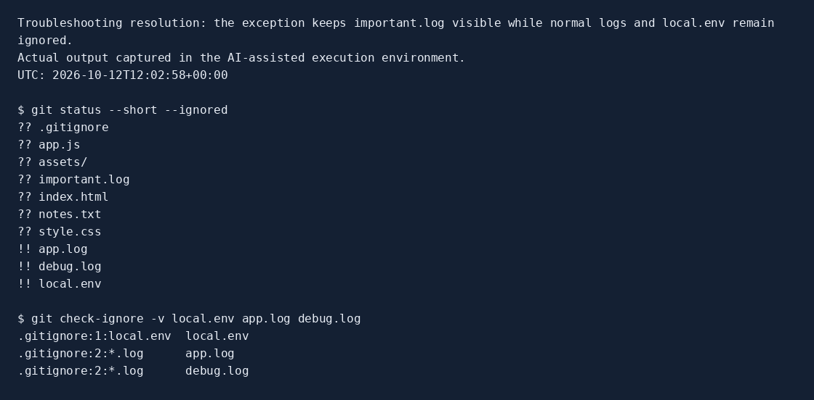
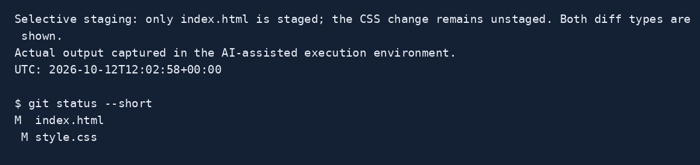
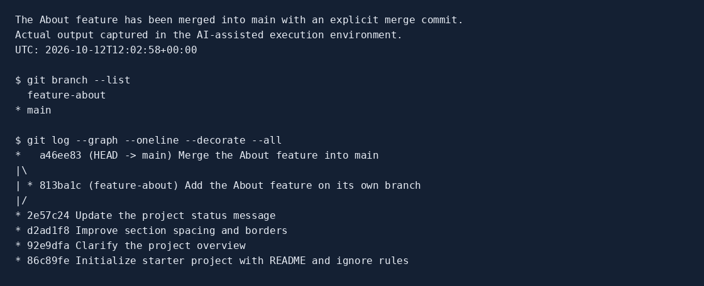

Edit the draft text directly on this page before printing. Complete the GitHub steps first. Save the PDF as Assignment1_Report_158085.pdf inside the project.
Full name: Hafsa El Mahfoudy
Student ID: 158085
Course & section: CSC 3324 01
GitHub username: USERNAME_PENDING
Display name supplied: Hafsa mhf
The provided STARTER files were copied into a new repository and initialized with git init -b main. The final .gitignore contains local.env, *.log, and !important.log. The first two rules ignore the local configuration and ordinary logs; the exception keeps important.log available to Git.
A simple issue was demonstrated and solved: the broad *.log pattern initially ignored important.log. Adding !important.log corrected that result. Before/after command captures are stored in evidence/01_ignore_before and evidence/02_ignore_after.
local.env *.log !important.log

Actual Git output, rendered as a readable capture. This is not a screenshot of the student's laptop.
README.md contains my name, student ID, course/section, the supplied display name, a project description, a technologies list, a Bash code block, a documentation link, and the provided assets/project-banner.svg image. USERNAME_PENDING marks the exact GitHub handle that must be confirmed.
Five content commits record setup, the overview improvement, CSS styling, the JavaScript status message, and the About feature. An explicit merge commit integrates the feature. The PDF and evidence are added in an additional commit after the workflow captures.
| Commit | Change |
|---|---|
| 86c89fe | Initialize starter project with README and ignore rules |
| 92e9dfa | Clarify the project overview |
| d2ad1f8 | Improve section spacing and borders |
| 2e57c24 | Update the project status message |
| 813ba1c | Add the About feature on its own branch |
| a46ee83 | Merge the About feature into main |
After the initial commit, index.html and style.css were modified together. Only index.html was staged with git add index.html and committed first. The remaining CSS modification was confirmed with git status and git diff before a separate CSS commit.
The evidence includes a full unstaged diff and staged diff. In the status excerpt, M in the left column for index.html means staged; M in the right column for style.css means modified but unstaged.

Excerpt of the actual selective-staging capture. Full staged and unstaged diffs are included in evidence/04_selective_staging.txt.
The feature-about branch was created with git switch -c feature-about. An About section was added to index.html and committed on that branch. After switching back to main, the feature was merged using git merge --no-ff feature-about. The explicit merge commit makes the branch integration visible in the graph.
The About section was verified to be absent from main before merging and present afterward. The feature branch is retained for inspection.

Actual branch/merge output captured before the report commit.
A commit saves staged changes in the local repository; push publishes local commits to a remote. Fetch downloads remote information and updates remote-tracking references without changing working files. Pull fetches and integrates remote changes into the current branch.
PENDING: create the correctly named empty GitHub repository, publish main, edit README directly on GitHub, fetch and capture local main behind origin/main before pulling, then pull and verify the edited sentence. These operations have not been performed. The provided Finish_GitHub.sh guide records the actual evidence when they are completed.
AI assistance was used to interpret the assignment, prepare the README and source edits, execute the local Git workflow, and draft this report after my laptop became unresponsive. My prompts asked for a step-by-step explanation and then an assignment package. The generated work was checked by the assistant using actual Git status, diff, log, ignore-rule, branch and merge outputs. Those checks were performed in the assistant's execution environment, not on my laptop. Before submission I must review the commands and verify the actual GitHub operations. The commits use my supplied name and a temporary local email (git-assignment@localhost); the exact GitHub handle and my account email still need confirmation.
Sources: Assignment 1 and Report Template - group A.pdf; Git presentation Session 1 - group A.pdf; the supplied Assignment1_Starter archive; GitHub documentation about valid account handles. The report and evidence should be reviewed before submission.
Draft reflection - personalize before submitting: The difference between fetch and pull is a concept I need to confirm: fetch updates remote knowledge, while pull integrates changes. If Git behaves unexpectedly, I would first inspect git status, the active branch, and git remote -v.